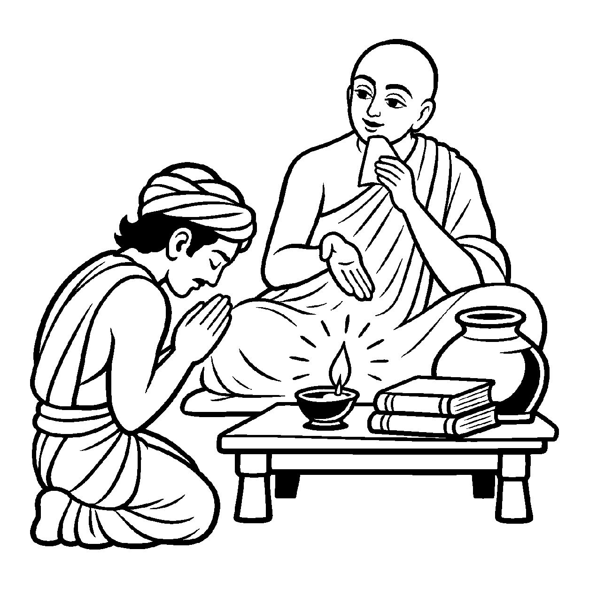

સૂર્ય આખા બ્રહ્માંડને અજવાળે છે, જ્યારે એક નાનકડો માટીનો દીવો કેવળ પોતાના ઓરડામાં રહેલા ઘડા, વસ્ત્ર કે પલંગ જેવા થોડાક જ પદાર્થોને અજવાળે છે. લોકો કહે છે કે 'આ દીવાએ ઘડાને દેખાડ્યો.' દીવો ઓરડામાં સીમિત છે, છતાં તે મર્યાદિત પદાર્થોનો પ્રકાશક કહેવાય છે. તેવી જ રીતે જ્યારે સંસારી અલ્પજ્ઞ જીવ પોતાના ક્ષયોપશમ મતિ-શ્રુતજ્ઞાન દ્વારા ઘટ, પટ, પુસ્તક કે ઘર જેવા મર્યાદિત પરપદાર્થોને જાણે છે, ત્યારે તે અપૂર્ણ જ્ઞાનનો પરપદાર્થો સાથે જ્ઞાતા-જ્ઞેય સંબંધ જોડીને — "આ જીવ ઘડા અને વસ્ત્રનો જાણકાર છે, આ જીવ પુસ્તકનો જ્ઞાતા છે" — એમ અપરિપૂર્ણ જ્ઞાતાપણાનું વાણી દ્વારા પ્રતિપાદન કરવું તે 'અપરિપૂર્ણ ઉપચરિત સ્વભાવ વ્યવહાર' કહેવાય છે.
૧૦૫મો નય પ્રભુની પૂર્ણ સર્વજ્ઞતાનો ઉપચાર હતો; જ્યારે આ ૧૦૫.૧મો નય સામાન્ય અલ્પજ્ઞ સંસારી જીવની મર્યાદિત જ્ઞાનદશાનો ઉપચાર છે. જીવનું જ્ઞાન આવરણોથી ઢંકાયેલું હોવાથી તે કેવળ ઇન્દ્રિયગોચર થોડાક જ પદાર્થોને જાણી શકે છે. આ નય સાધકના રોજિંદા લૌકિક વ્યવહાર અને વિદ્યાભ્યાસને સુસંગત બનાવે છે.
જ્યારે જીવ સમજે છે કે મારું જ્ઞાન તો કેવળ અપરિપૂર્ણ ઉપચાર માત્ર છે, ત્યારે તેના મનમાંથી પંડિતાઈનો ગર્વ ઓગળી જાય છે અને તે પૂર્ણ કેવળજ્ઞાન પામવા નમ્ર બને છે.
ઘટ પટ આદિ પર પદાર્થ, અલ્પજ્ઞાની જણાય;
અપરિપૂર્ણ ઉપચારથી, લૌકિક પંથ ગણાય.
ઇન્દ્રિય મર્યાદા મધ્યે, જ્ઞાન કરે વિહાર;
અહંકાર તજી અંતરે, પામે બોધ ઉદાર.
આત્માના સ્વાભાવિક પરિણામોનું સેવન કરી પરભાવોના ભારમાંથી સહજ મુક્તિ પામવી.

ધર્મક્ષેત્રના એક યુવાન પંડિત વિદ્યાધર ચાર શાસ્ત્રો ભણીને ભારે અભિમાની બની ગયા હતા. તેઓ સભામાં કહેતા: "હું તમામ તત્વગ્રંથોનો જ્ઞાતા છું! હું આખા નગરનો સૌથી મોટો વિદ્વાન છું." તેઓ સામાન્ય માણસોની મજાક ઉડાવતા અને માનતા કે મારા જેવું જ્ઞાન કોઈની પાસે નથી. તેમના આ અહંકારથી પરિવાર અને સંઘના લોકો ત્રાસી ગયા હતા.
તે જ સમયે સંઘના પ્રખર આગમજ્ઞ આચાર્યશ્રી જ્ઞાનચંદ્રજી ત્યાં પધાર્યા. વિદ્યાધર પોતાની વિદ્વત્તાનું પ્રદર્શન કરવા આચાર્યશ્રી પાસે ગયો. રાત્રિનો સમય હતો. આચાર્યશ્રીએ ઓરડામાં એક નાનો માટીનો કોડિયું પ્રગટાવ્યો અને વિદ્યાધરને પૂછ્યું, "પંડિતજી, આ દીવો શું અજવાળે છે?" વિદ્યાધરે કહ્યું, "મહારાજ, આ સામે પડેલા ઘડાને અને ટેબલ પર પડેલા પુસ્તકને." આચાર્યશ્રીએ પૂછ્યું, "શું આ દીવો આખા નગરને કે આકાશના તારાઓને અજવાળી શકે છે?" વિદ્યાધર હસી પડ્યો, "ના મહારાજ, આ તો નાનો દીવડો છે, એ કેવળ આ ઓરડાના બે-ચાર વાસણોને જ અજવાળી શકે!" આચાર્યશ્રીએ ગંભીર વાણીમાં કહ્યું, "વિદ્યાધર! અપરિપૂર્ણ ઉપચરિત સ્વભાવ વ્યવહાર આ જ સચોટ સત્ય દર્શાવે છે! તારું જ્ઞાન આ નાના દીવડા જેવું છે! તું કેવળ થોડાક પુસ્તકો અને શબ્દોનો અલ્પજ્ઞાતા છો! સમગ્ર ત્રિલોક અને ત્રિકાળને જાણનારા કેવળજ્ઞાની અરિહંત ભગવાન સામે તારું જ્ઞાન તો આ દીવડા જેટલું પણ નથી! થોડાક ઘટ-પટ જાણીને તું આટલો મોટો અહંકાર શા માટે કરે છે? ખરી વિદ્વત્તા તો નમ્રતામાં છે!" આચાર્યશ્રીના આ તત્વબોધનું પાન કરતાં જ વિદ્યાધરનો પંડિતાઈનો અહંકાર પળવારમાં ગળી ગયો. તેણે નતમસ્તક થઈને ગુરુદેવના ચરણોમાં ક્ષમા માંગી.
જો આ નયને એકાંત સત્ય માનીને સાધક અલ્પજ્ઞાનને જ પૂર્ણ માની લે, તો તે ક્યારેય આગળ અભ્યાસ કે કેવળજ્ઞાનનો પુરુષાર્થ ન કરે. એક જ પાસાને પકડી રાખવાથી વસ્તુની સમગ્ર અનેકાંતમય સત્તા વિખંડિત થાય છે અને સાધક પોતાના જ એકાંગી આગ્રહના બંધનમાં ફસાઈને સાચી શાંતિ ગુમાવી બેસે છે.
આ નય જ્યારે પૂર્ણ સર્વજ્ઞતા સાથે જોડાય છે, ત્યારે સાધક પોતાની વર્તમાન અલ્પજ્ઞતા જાણીને અહંકાર મુક્ત બને છે અને પૂર્ણ કેવળજ્ઞાન પ્રગટાવવાની સાધનામાં લીન થાય છે.